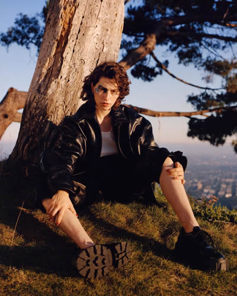

King Princess's real name is Mikaela Straus. She is an American singer, songwriter, and producer and she is currently 21 years old. Her two most popular songs are 1950 and Talia. In her music, she tends to sing about love, specifically loving girls. She is a lesbian. She is a very new face to the music industry and that shows through her unique voice and amazing lyrics. The fact that she is new is incredible because she sounds like she has been recording and publishing songs for a long time. She is a very new generation songwriter and it shows in her music. The song 1950 was her first song and it was released in February of 2018. The song first took off when Harry Styles tweeted a lyric from the song. She ended up doing an analysis of her song on Genius and it blew up even more.

| First Song | 1950 |
| Most Recent Song | Pain |
| All of Her Music | Youtube |